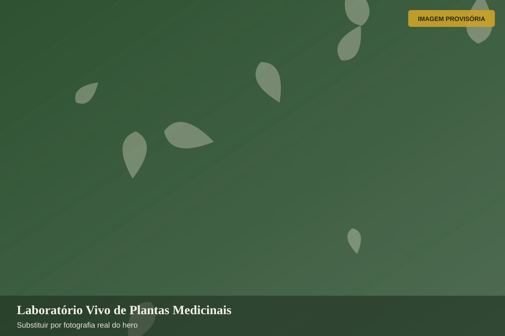
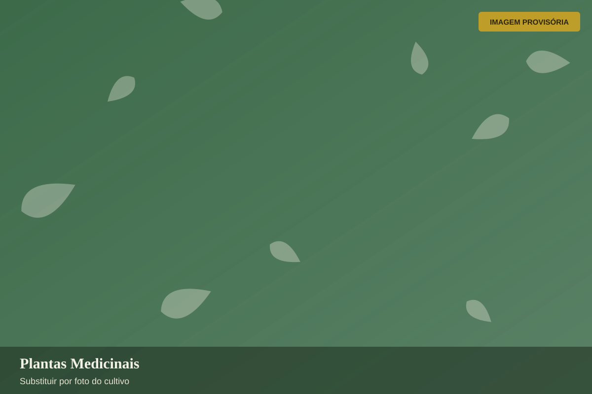
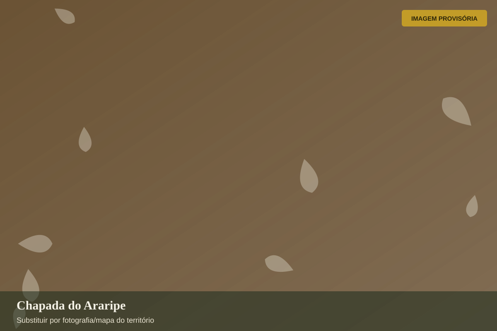
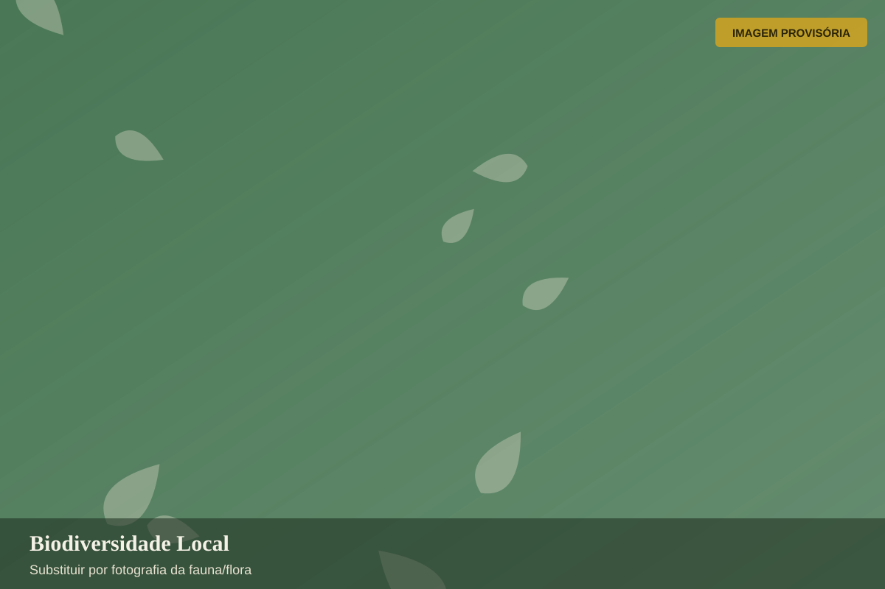

Laboratório Vivo de Plantas Medicinais
Ciência, saberes tradicionais, biodiversidade e cuidado em conexão com o território.
Um espaço vivo de ciência, cuidado e conhecimento
O Laboratório Vivo de Plantas Medicinais, vinculado ao curso de Biomedicina do Centro Universitário Leão Sampaio (Unileão) e integrante do Programa de Educação Ambiental e Social (PEAS), constitui um espaço de aprendizagem, experimentação, educação ambiental e interação comunitária.
Sua proposta articula o cultivo e a conservação de plantas medicinais com a valorização dos conhecimentos tradicionais, a formação acadêmica, a produção científica e o desenvolvimento de práticas sustentáveis — reconhecido pelo segundo ano consecutivo entre os projetos de destaque do PEAS.
Ver projetos e subprojetos
Ensino
Pesquisa
Extensão
Sustentabilidade
Comunidade
Chapada do Araripe
Um patrimônio natural e cultural que sustenta a identidade do Laboratório Vivo.
A Chapada do Araripe é parte fundamental da identidade do Laboratório Vivo. Sua biodiversidade, seu patrimônio natural e os saberes tradicionais das comunidades que nela vivem são fonte constante de conhecimento, inspiração e responsabilidade científica — tema, inclusive, da primeira edição do Chá Científico promovido pelo projeto em 2025.
- ＋ Biodiversidade e patrimônio natural de relevância ambiental e científica
- ＋ Conhecimentos tradicionais sobre plantas medicinais transmitidos pelas comunidades locais
- ＋ Relação direta entre território, saúde e modos de vida
- ＋ Necessidade permanente de conservação ambiental
- ＋ Potencial científico e educacional a ser explorado com respeito e rigor


Como atuamos
Cinco eixos que orientam todas as ações do Laboratório Vivo.
Plantas Medicinais
Cultivo, identificação, conhecimento e valorização das espécies medicinais.
Ciência e Pesquisa
Produção de conhecimento científico relacionado às plantas medicinais, biodiversidade e saúde.
Educação
Formação de estudantes e atividades de educação científica e em saúde.
Sustentabilidade
Valorização da biodiversidade, educação ambiental e práticas sustentáveis.
Comunidade
Integração entre universidade, comunidades, escolas e outros parceiros.
Um projeto guarda-chuva
O Laboratório Vivo reúne diferentes ações e subprojetos que se conectam em torno de um mesmo propósito.
Marcos de 2025 e 2026
Uma linha do tempo com as principais ações e conquistas documentadas do Laboratório Vivo.
Ensino, Pesquisa e Extensão
O Laboratório Vivo cria um ambiente de integração entre formação acadêmica, produção de conhecimento e transformação social.
Formação de estudantes, produção científica e ações junto à comunidade caminham juntas, alimentando-se mutuamente dentro do Laboratório Vivo.
Atividades do Laboratório Vivo
Galeria preparada para receber fotografias reais das atividades. As imagens abaixo são provisórias.
Resultados do Laboratório Vivo
Números do relatório de atividades 2025–2026.
Os números de 2026 são estimativas operacionais informadas pela coordenação do projeto, e não contagens auditadas ou registros nominais de participação — os intervalos não devem ser somados ou multiplicados pelo número de ações para estimar um total único. Os dados de 2025 referem-se a registros documentados.
Produção científica e materiais
Artigos, trabalhos acadêmicos, relatórios e materiais educativos produzidos a partir do Laboratório Vivo.
Um projeto que vai além da universidade
O Laboratório Vivo dialoga com escolas, comunidades, profissionais e parceiros em torno da educação em saúde e ambiental.
Escolas
Comunidades
Estudantes
Professores
Profissionais
Parceiros
Educação em Saúde
Ações Ambientais
Quer fazer parte dessa rede?
O Laboratório Vivo cresce em parceria com quem acredita na força da ciência, do território e da comunidade.